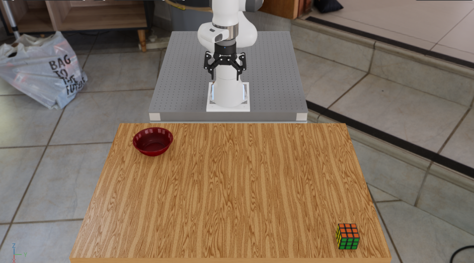

First Arena Environment#
Our first environment, pick_and_place_maple_table, is a table-top pick-and-place environment where a robot picks up an
object and places it into a destination container. This page walks through how the environment is
defined, introducing the core Arena building blocks along the way.
{kind=link}

The pick_and_place_maple_table environment: a DROID robot with a Rubik’s cube and bowl on a maple table.#
The Three Building Blocks#
Arena builds every environment by composing three independent pieces:
Scene — the physical world: background geometry, objects, and lighting.
Embodiment — the robot: its kinematics, observations, actions, and sensors.
Task — the objective: success criteria, termination conditions, and metrics.
Each piece is swappable without touching the others.
For example, as we shall see, we can replace the Rubik’s cube in pick_and_place_maple_table
with another object and get a new environment — no task or embodiment code changes at all.
Full Source: pick_and_place_maple_table_environment.py
class PickAndPlaceMapleTableEnvironment(ExampleEnvironmentBase):
name: str = "pick_and_place_maple_table"
def get_env(self, args_cli):
# Step 1: Retrieve assets from the registry
background = self.asset_registry.get_asset_by_name("maple_table_robolab")()
pick_up_object = self.asset_registry.get_asset_by_name(args_cli.pick_up_object)()
destination_location = self.asset_registry.get_asset_by_name(args_cli.destination_location)()
table_reference = ObjectReference(
name="table",
prim_path="{ENV_REGEX_NS}/maple_table_robolab/table",
parent_asset=background,
object_type=ObjectType.RIGID,
)
# Step 2: Describe spatial relationships
table_reference.add_relation(IsAnchor())
pick_up_object.add_relation(On(table_reference))
destination_location.add_relation(On(table_reference))
# Step 3: Configure lighting
light = self.asset_registry.get_asset_by_name("light")(
spawner_cfg=sim_utils.DomeLightCfg(intensity=args_cli.light_intensity),
)
if args_cli.hdr is not None:
light.add_hdr(self.hdr_registry.get_hdr_by_name(args_cli.hdr)())
# Step 4: Select the embodiment
embodiment = self.asset_registry.get_asset_by_name(args_cli.embodiment)(
enable_cameras=args_cli.enable_cameras,
)
# Step 5: Compose the scene
scene = Scene(assets=[background, light, pick_up_object, destination_location, table_reference])
# Step 6: Define the task
task = PickAndPlaceTask(
pick_up_object=pick_up_object,
destination_location=destination_location,
background_scene=background,
episode_length_s=20.0,
)
# Step 7: Assemble the environment
isaaclab_arena_environment = IsaacLabArenaEnvironment(
name=self.name,
embodiment=embodiment,
scene=scene,
task=task,
)
return isaaclab_arena_environment
@staticmethod
def add_cli_args(parser):
parser.add_argument("--embodiment", type=str, default="droid_abs_joint_pos")
parser.add_argument("--hdr", type=str, default=None)
parser.add_argument("--light_intensity", type=float, default=500.0)
parser.add_argument("--pick_up_object", type=str, default="rubiks_cube_hot3d_robolab")
parser.add_argument("--destination_location", type=str, default="bowl_ycb_robolab")
Step 1: Retrieve Assets from the Registry#
background = self.asset_registry.get_asset_by_name("maple_table_robolab")()
pick_up_object = self.asset_registry.get_asset_by_name(args_cli.pick_up_object)()
destination_location = self.asset_registry.get_asset_by_name(args_cli.destination_location)()
The AssetRegistry is a catalog of all registered simulation assets — robots, objects,
backgrounds, and lights. Each call to get_asset_by_name() returns an asset class; calling
that class (the trailing ()) instantiates it with default configuration.
Notice that pick_up_object and destination_location come from args_cli rather than
being hardcoded. This is the variation axis: swapping --pick_up_object on the command line
changes which asset is fetched here, resulting in a new environment, with zero code changes.
See Assets Design for details on the asset registry and how to register custom assets.
Step 2: Describe Spatial Relationships#
table_reference = ObjectReference(
name="table",
prim_path="{ENV_REGEX_NS}/maple_table_robolab/table",
parent_asset=background,
object_type=ObjectType.RIGID,
)
table_reference.add_relation(IsAnchor())
pick_up_object.add_relation(On(table_reference))
destination_location.add_relation(On(table_reference))
The maple_table_robolab background is a full room asset; the actual table surface is a
sub-prim within it. An ObjectReference gives that sub-prim a name Arena can reason about.
Relations describe how assets are placed relative to one another:
IsAnchor()markstable_referenceas a stable anchor point — Arena does not move this asset, but rather place other objects relative to it.On(table_reference)tells Arena to spawn the object (anywhere) on top of the table surface.
Arena resolves these relations at environment-build time to compute concrete spawn poses.
Step 3: Configure Lighting#
light = self.asset_registry.get_asset_by_name("light")(
spawner_cfg=sim_utils.DomeLightCfg(intensity=args_cli.light_intensity),
)
if args_cli.hdr is not None:
light.add_hdr(self.hdr_registry.get_hdr_by_name(args_cli.hdr)())
light is a dome light asset whose intensity is controlled by --light_intensity. Passing
--hdr wraps the dome light with an HDR environment map, simultaneously changing the background
panorama and the ambient lighting. See Running your First Experiments for an experiment where the HDR
background is swapped out for a different ones.
Step 4: Select the Embodiment#
embodiment = self.asset_registry.get_asset_by_name(args_cli.embodiment)(
enable_cameras=args_cli.enable_cameras,
)
The embodiment encapsulates everything robot-specific: the USD robot model, joint configuration, action
space, observation space, and cameras. droid_abs_joint_pos is the DROID setup (Franka arm +
Robotiq 2F-85 gripper) with absolute joint-position control.
Swapping --embodiment replaces the robot entirely — observations, actions, and sensors update
automatically. See Embodiment Design for details.
Step 5: Compose the Scene#
scene = Scene(assets=[background, light, pick_up_object, destination_location, table_reference])
The Scene collects all physical assets. The embodiment is kept separate — it is passed directly
to IsaacLabArenaEnvironment rather than added to the scene — because the robot interacts with
the scene rather than being part of it.
See Scene Design for scene composition details.
Step 6: Define the Task#
task = PickAndPlaceTask(
pick_up_object=pick_up_object,
destination_location=destination_location,
background_scene=background,
episode_length_s=20.0,
)
The task defines what success and failure mean. PickAndPlaceTask declares two termination conditions:
success — the pick-up object is resting on the destination (contact + low velocity).
failure (object dropped) — the object falls below the table surface.
It also attaches metrics (SuccessRateMetric, ObjectMovedRateMetric) that eval_runner.py
collects at the end of each episode. These metrics will report the proportion of successful episodes,
as well as the proportion of episodes in which the object was moved.
See Tasks Design for creating custom tasks.
Step 7: Assemble the Environment#
isaaclab_arena_environment = IsaacLabArenaEnvironment(
name=self.name,
embodiment=embodiment,
scene=scene,
task=task,
)
IsaacLabArenaEnvironment holds the three pieces together.
This is Arena’s declarative description of the environment.
Simple huh?
Note that behind the scenes, the ArenaEnvBuilder compiles this description into a
ManagerBasedRLEnvCfg and registers it with Gymnasium.
This compiled result can then be run in Isaac Lab.
See Environment Compilation Design for how compilation works,
but these details are not important for how to use Arena.
Variation via CLI Arguments#
Each argument that drives variation is wired directly to an asset_registry.get_asset_by_name()
call. Changing --pick_up_object at the command line changes which asset is fetched; no other
code is touched. This is Arena’s core pattern for building scalable task libraries without
duplicating environment code.
Argument What it swaps
───────────────────── ─────────────────────────────────────────
--pick_up_object The object the robot must pick up
--destination_location The container the robot must place it in
--embodiment The robot (kinematics, actions, sensors)
--hdr Background panorama and ambient lighting
--light_intensity Dome light brightness
Next Steps#
Now that you understand how the environment is built, see Running your First Experiments to run it and evaluate a policy across object, lighting, and scale variations from the same environment definition, with no code changes.